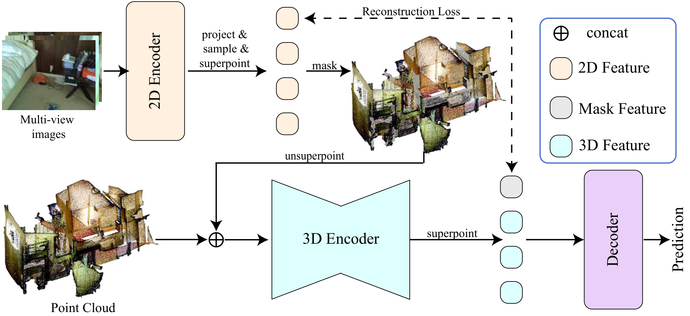
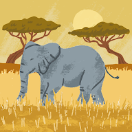
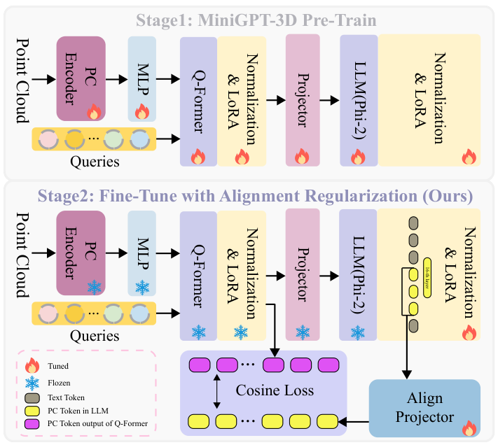
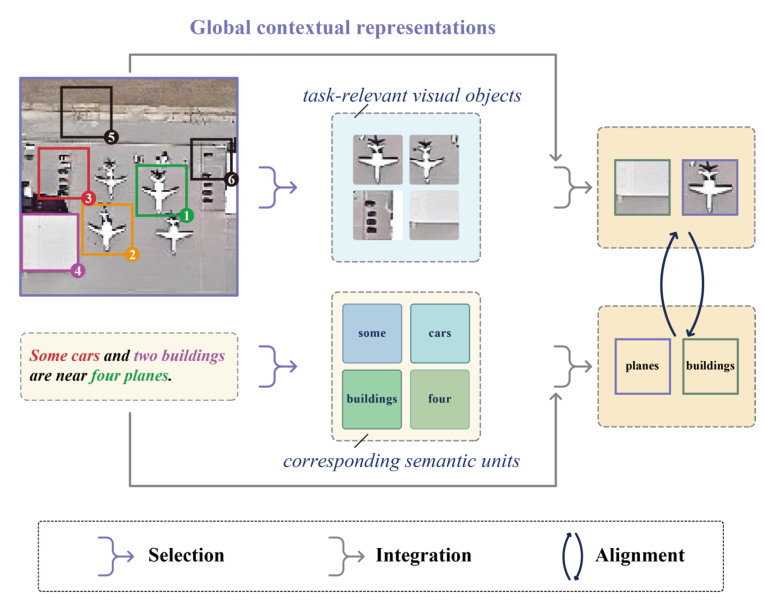
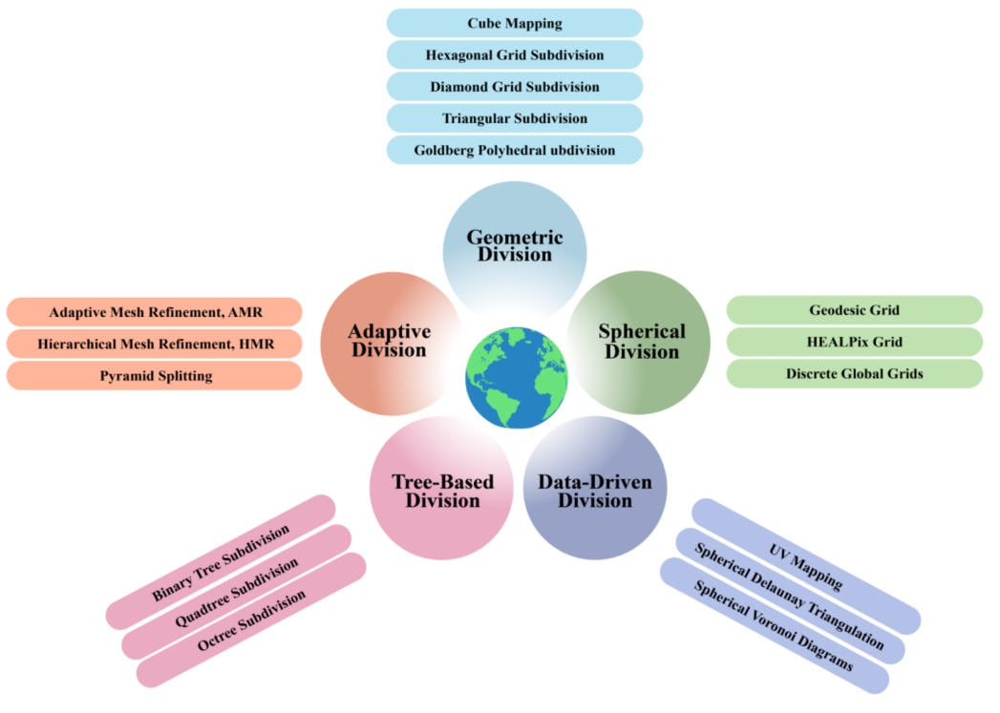
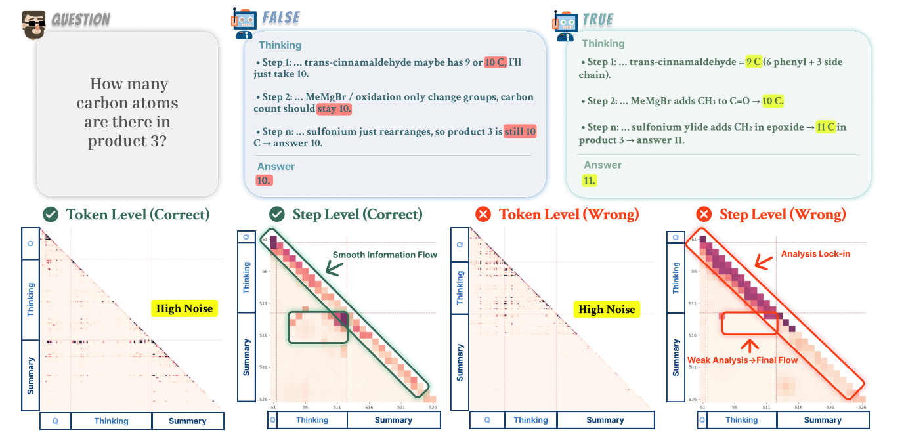

NeurIPS · 2026.09
01About
I am an undergraduate student at Fuzhou University, majoring in Computer Science and Software Engineering.
During my undergraduate studies, I have been fortunate to work with Shaofeng Zhang, Weiyi Xue, and Yuan Liu, whose guidance has shaped my academic journey.
在本科学习期间，我有幸与 Shaofeng Zhang、Weiyi Xue 和 Yuan Liu 合作；他们的指导塑造了我的学术道路。
My research lies in 3D Vision.
02News
2026
Geometry-Guided Semantic Reconstruction is at NeurIPS 2026.
PointAlign is at CVPR 2026, introducing feature-level alignment for 3D vision-language models.
Started as a Research Intern at IGL, HKUST.
2025
FAME and Geospatial Grid Management were accepted by TGRS and JAG.
03Publications

PointAlign: Feature-Level Alignment Regularization for 3D Vision-Language Models

FAME: Fusion of Alignment and Multi-view Enhancement for Remote Sensing Image-Text Retrieval

Geospatial Grid Management: A Comprehensive Framework and Systematic Review of Subdivision, Encoding, Indexing and Storage

Reasoning Fails Where Step Flow Breaks
04Achievements
Honors & awards
- Top 5% · Second-Class University Scholarship, Fuzhou University, 2026
- First Prize (Fujian Division, approximately Top 8%), National Mathematical Contest in Modeling, 2025
- Software Copyright: YiBan APP 1.0 · 2025SR0689058
05Education
Fuzhou University - Maynooth International Engineering College (211)
Sep. 2023 — Jul. 2027 · Fuzhou, China
Bachelor of Computer Science and Software Engineering
GPA: 3.80/4.00